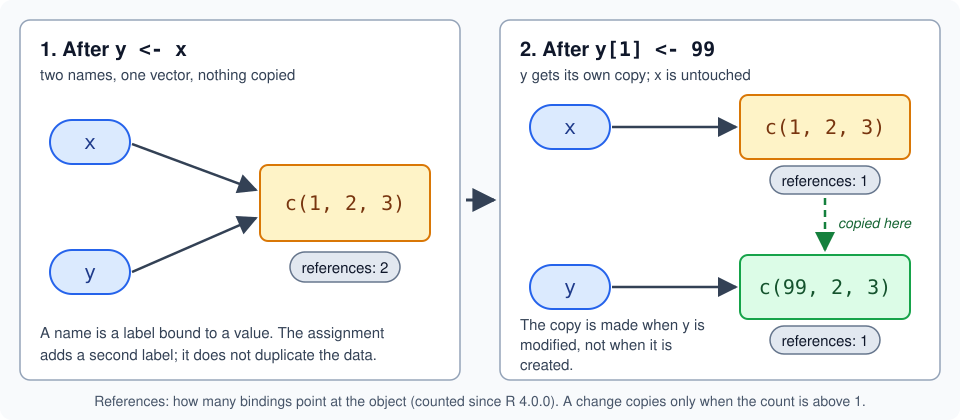

Assignment, Names and Values
|
This content was generated with the assistance of AI and should be verified against the official documentation before being relied on in production. |
Checked against R 4.6.1 (2026-06-24) on 2026-10-20; R 4.6.2 is scheduled for 2026-10-29. This page explains what an
assignment does in R: it binds a name to a value in an environment, it never copies the value by itself, and the value is
copied later, at the moment one of its names is used to modify it. From there it covers the five assignment forms,
the replacement form f(x) <- value, the functions that work with names given as strings (assign(), get(),
mget(), get0() and exists()), copy-on-modify and the reference counting that R has used since 4.0.0 to decide when
a copy is needed, the objects that break the rule (environments, R6 and Reference Classes), and the tools that remove,
scope, lock and compute names (rm(), local(), lockBinding(), lockEnvironment() and makeActiveBinding()). Every
example uses only base R and the packages that ship with it (base, utils, stats and methods), except one: the
R6 example uses the add-on package R6, checked at version 2.6.1. The community package lobstr is mentioned in prose
only; it was not installed, so none of its output is shown.
Every example below is a complete script that was run with Rscript on R 4.6.1 with warnings printed as they happen
(options(warn = 1)), and the lines starting with #> are what it printed. The scripts also pass the default lintr
linters. Where an idiom being shown is exactly what a default linter dislikes (= and -> for assignment, <<-,
a global created by <<-), the line carries a # nolint: comment so that the linter does not hide the lesson. The
names books, loans, shelf_today, loan_days and the book class come from the scenario.R file of the running
library-shelf scenario described on the section index; the scripts that use
them start with source("scenario.R"), which reads books.csv and loans.csv. tracemem() prints the address of an
object, which is different on every run, so every address is shown below as <0x...> (the real message shows a bare
hexadecimal number between the brackets), and the call stack that follows the message is empty at the top level of a
script, as it is here. The page Syntax and Lexical
Structure covers which strings are valid names and the reserved words; this page is about what happens once a name is
on the left of an assignment.
Names bind to values
A programmer used to C or Java thinks of a variable as a box that holds a value. R works the other way round. The value is an object that exists on its own, and a name is a label that is bound to it. The language definition describes the mechanism: an environment consists of a frame, which is a set of symbol-value pairs, and an enclosure, a pointer to an enclosing environment; looking up a symbol examines the frame and, if there is no match, the enclosure, and so on up a tree that is rooted in the empty environment (R-lang: Environments). The manual for beginners introduces the same idea in its first section: R operates on named data structures, and an assignment gives a name to the result of an expression (R-intro: Vectors and assignment). Everything else on this page follows from that picture.
| Word | Meaning on this page |
|---|---|
Name (symbol) |
The label written in the source: |
Value (object) |
A vector, list, function, environment or any other R object. A value does not know which names point at
it, and it can have no name at all (the intermediate result of |
Binding |
One name-value pair in the frame of an environment. An assignment creates or replaces a binding, |
Environment |
A frame of bindings plus a pointer to the enclosing environment. Top-level assignments go to the global environment; every function call gets a new environment of its own. See Scoping, Environments and Closures. |
Reference count |
The number of references that point at one object (names bound to it, but also list elements and other holders). R 4.0.0 and later use it to decide whether a modification has to copy the object first. |
Four consequences are worth keeping in mind before the details.
-
An assignment creates or replaces a binding. It does not declare a type or change the type of a variable, because a name has no type; the value it is bound to has one.
-
Two names can be bound to the same value, and the assignment
y <- xis exactly that: it adds a label and does not duplicate the data. -
Changing a value through one name must not change what the other name sees. R keeps this promise by copying lazily: the copy is made when one of the names is modified (copy-on-modify), which is why the arguments of a function can be modified inside it without affecting the caller.
-
Environments are the exception. They are values that are shared and never copied, which is what makes closures, R6 objects and Reference Classes work.
The assignment operators
R has three assignment operators, two of which have a leftwards and a rightwards form. The help page
?assignOps lists them together.
| Operator | Written as | Where it assigns | Notes |
|---|---|---|---|
|
|
the environment in which it is evaluated |
Works anywhere an expression is allowed. This is the operator of the manuals and of this reference. |
|
|
the environment in which it is evaluated |
The help page documents it for the top level and for the expressions of a braced block; inside a call it names an argument instead. |
|
|
as |
The parser rewrites it into a |
|
|
the nearest enclosing environment that already has |
Normally used inside functions; see the section on superassignment. |
|
|
as |
The parser rewrites it into a |
The target x can be a name, a string or backquoted name, or an expression that defines part of an object, such as
z[[1]]; the help page recommends backquotes over quotes for names that are not syntactic. The leftwards forms group
from right to left and the rightwards forms from left to right, and the value of an assignment expression is the value
that was assigned, which is why a <- b <- c <- 6 works.
# The five assignment operators and what each one returns.
shelf_name <- "Main hall"
loan_limit = 3L # nolint: assignment_linter.
"Reading room" -> annex_name # nolint: assignment_linter.
c(shelf_name, annex_name)
#> [1] "Main hall" "Reading room"
loan_limit
#> [1] 3
# An assignment is an expression whose value is the assigned value, returned
# invisibly. Parentheses make it visible; chaining works because of it.
(copies <- 4L)
#> [1] 4
shelf_a <- shelf_b <- shelf_c <- 0L
c(shelf_a, shelf_b, shelf_c)
#> [1] 0 0 0
# Leftwards forms group right to left, the rightwards forms left to right.
first = second <- 7L # nolint: assignment_linter.
c(first, second)
#> [1] 7 7
# The superassignment forms are covered further down; at the top level they
# behave like the plain forms, because the global environment is searched.
global_count <<- 1L # nolint: assignment_linter.
2L ->> other_count # nolint: assignment_linter.
c(global_count, other_count)
#> [1] 1 2
# An assignment is a call: the backquoted operator is an ordinary function.
`<-`(from_call, 99L)
from_call
#> [1] 99
# The parser rewrites the rightwards forms into the leftwards ones.
quote(5 -> x)
#> x <- 5
quote(5 ->> x)
#> x <<- 5
parse(text = "x = 5")[[1L]]
#> x = 5
class(parse(text = "x = 5")[[1L]])
#> [1] "="
class(quote(x <- 5))
#> [1] "<-"
as.list(quote(x <- 5))
#> [[1]]
#> `<-`
#>
#> [[2]]
#> x
#>
#> [[3]]
#> [1] 5Four things in the output are worth reading slowly.
-
(copies <- 4L)printed4, while the chainshelf_a <- shelf_b <- shelf_c <- 0Lprinted nothing. The value of an assignment is returned invisibly, so a bare assignment at the console prints nothing, and parentheses make it visible again. Chaining works because the inner assignment is an expression whose value is the assigned value. -
first = second <- 7Lbound both names, because the leftwards forms group from right to left: it is read asfirst = (second <- 7L). -
At the top level
<<-and->>behaved like the plain operators: nothing between the global environment and the search path had the name, so the global environment received it. -
An assignment is a function call. The operator can be called like any other function when it is written in backquotes (the script does that with the name
from_call), and the parser turns the rightwards forms into the leftwards ones:quote(5 -> x)prints asx <- 5. The=form is not rewritten: it stays a call of its own, of class"=". This is the sense of the manual’s remark that the left-hand side of an assignment such asclass(x) <- "foo"is itself a call (R-lang: Function calls).
Why the arrow is the convention
The two spellings are interchangeable at the top level, so the choice is a matter of convention, but the reasons for the convention are concrete.
-
<-is the operator of the manuals. An Introduction to R introduces it first and says that in most contexts=can be used as an alternative (R-intro: Vectors and assignment); the help page for=adds that<-can be used anywhere whereas=has restricted contexts. -
In a call,
=already means something else.mean(x = v)passesvas the argument calledxand creates nothing, whilemean(x <- v)assigns and then passes the value. A reader who sees=in a call has to know which it is; with<-as the only assignment operator the question never arises. -
The two operators have different precedence. In the table of the help page
?Syntaxthe leftwards assignment<-binds tighter than=, and=is not necessarily an operator at all (R documentation: Operator Syntax and Precedence). That is whyx <- y = 5is an error: it is read as(x <- y) = 5. -
The community style guide for the tidyverse (tidyverse style guide, community: Assignment) and the default linters of the
lintrpackage (theassignment_linter()flags=,->and, by default,<<-) both follow the same convention. The style guide is community material and not part of R, and a project that has chosen another style is not wrong. -
Typing it is cheap: the IDEs insert the arrow, with spaces around it, with a keyboard shortcut, as the page IDEs and the R Console lists.
The rightwards forms are legal and occasionally read well at the end of a pipeline, but -> and ->> are flagged
by the default linters and are rare in published code.
The equals sign versus the arrow
# Inside a call, "=" names an argument; "<-" is an assignment.
x <- 10
mean(x = c(2, 4, 6))
#> [1] 4
x
#> [1] 10
mean(x <- c(2, 4, 6))
#> [1] 4
x
#> [1] 2 4 6
# "=" works at the top level and as a statement inside braces ...
if (is.numeric(x)) {
inside_braces = 1L # nolint: assignment_linter.
}
inside_braces
#> [1] 1
# ... but not as the condition of an if, where it is a syntax error.
outcome <- function(code) {
tryCatch(
{
eval(parse(text = code))
"ok"
},
error = conditionMessage
)
}
outcome("if (flag = TRUE) 1")
#> [1] "<text>:1:10: unexpected '='\n1: if (flag =\n ^"
outcome("if (flag <- TRUE) 1")
#> [1] "ok"
# Parentheses make "=" parse as an assignment again, but the documentation
# does not list this as a supported context.
outcome("if ((flag = TRUE)) 1")
#> [1] "ok"
# The arrow binds tighter than "=", so the first line below means
# "(a <- b) = 3": a replacement call to a function named "<-<-".
a <- 1
b <- 2
outcome("a <- b = 3")
#> [1] "could not find function \"<-<-\""
outcome("a = b <- 3")
#> [1] "ok"
# "x<-5" and "x < -5" differ only in the whitespace.
y <- 3
y<-5 # nolint: infix_spaces_linter.
y
#> [1] 5
y < -5
#> [1] FALSE
# A function argument default uses "=", never "<-".
describe <- function(title, copies = 1L) {
paste(copies, "copy of", title)
}
describe("Paper Moons", copies = 2L)
#> [1] "2 copy of Paper Moons"The first pair of calls shows the difference that matters in daily work. mean(x = c(2, 4, 6)) left the x of the
workspace alone and returned 4, because the tag x = named an argument of mean(). mean(x <- c(2, 4, 6)) returned the
same 4 but also created (here replaced) x in the workspace, which is the surprise a reader meets when <- appears
inside a call. Neither form is an error, but the second hides a side effect that is rarely intended.
The documentation limits = to the top level and to the expressions of a braced block, and the script confirms both
sides of the rule: the braced form worked, and if (flag = TRUE) 1 is rejected by the parser with
unexpected '=', while if (flag <- TRUE) 1 runs. With parentheses (if ((flag = TRUE)) 1) R 4.6.1 accepts an
assignment with = as well, but that is not a documented context and it reads like a typo; keep to <-.
The precedence difference produces the error that every beginner meets once. a = b <- 3 is a = (b <- 3) and
works; a <- b = 3 is (a <- b) = 3, a call to the replacement function <-<- that does not exist, so R
reports could not find function "<-<-". When the names do not exist yet the message is instead object 'a' not
found, because the left-hand side of a replacement is evaluated first. Both messages are about the target of the
assignment and neither mentions =, which is why they are confusing.
The last two pieces of the script are about the characters. y<-5 assigns and y < -5 compares, and the only
difference is a space (the manual compares x<-5 and x < -5 for the same reason). A function’s default value is
always written with = inside the parentheses of function(), never with <-.
What can stand on the left
The left-hand side of <- can be a syntactic name, a string such as "shelf name" <- "Main hall" or a backquoted
name (both bind the same name), or a call that names a replacement function, treated in the next section. A constant, a reserved word or an arbitrary expression cannot be assigned to. 5 <- 3 and NULL <- 3 fail
at run time with invalid (do_set) left-hand side to assignment, while if <- 1 is already a syntax error; the
syntax page has the full list. A name that is not syntactic needs backquotes (or quotes) at the left-hand side but not
in assign(), which takes the name as a string and has no syntax to trip over.
Complex assignment and replacement functions
Assigning to part of an object, such as x[3:5] <- 13:15, names(x) <- c("a", "b") or levels(f)[2] <- "b", is
called complex assignment in the language definition, and it is not a special case in the language. It is a rewrite, and
the manual spells the rewrite out: x[3:5] <- 13:15 is evaluated as if it had been written with a temporary variable
called *tmp*, a call to the replacement function [<-, an assignment back to x, and the removal of the
temporary. The replacement function has the name of the function with <- pasted on, and its last argument must be
called value
(R-lang: Subset assignment).
# Copies of each title held in three rooms.
stock <- c(main = 4L, annex = 2L, reading = 7L)
# "stock[2] <- 9L" is sugar for calling "[<-" and assigning the result back.
by_hand <- stock
by_hand <- `[<-`(by_hand, 2L, value = 9L)
stock[2L] <- 9L
identical(stock, by_hand)
#> [1] TRUE
# Nested targets are evaluated from the inside out.
names(stock)[3L] <- "reading room"
stock
#> main annex reading room
#> 4 9 7
by_hand <- `names<-`(
by_hand,
value = `[<-`(names(by_hand), 3L, value = "reading room")
)
identical(stock, by_hand)
#> [1] TRUE
# During the replacement the object is also bound to the name "*tmp*".
`peek<-` <- function(x, value) {
cat("*tmp* visible inside:", exists("*tmp*", envir = parent.frame()), "\n")
x
}
peek(stock) <- 1L
#> *tmp* visible inside: TRUE
exists("*tmp*")
#> [1] FALSE
# Removing and storing NULL: R FAQ 7.1.
shelf <- list(title = "Paper Moons", year = 2005L, pages = 88L)
shelf[["year"]] <- NULL
names(shelf)
#> [1] "title" "pages"
shelf["year"] <- list(NULL)
names(shelf)
#> [1] "title" "pages" "year"
length(shelf)
#> [1] 3
# A complex superassignment looks the target up in the enclosing environments
# but evaluates the index and the value where the assignment is written.
rooms <- c(a = 1, b = 2)
pick <- 1
local({
rooms <- c(A = 10, B = 11)
pick <- 2
rooms[pick] <<- rooms[pick] + 1
})
rooms
#> a b
#> 1 12
# Assignment to an element of an object that does not exist is an error.
tryCatch(
missing_shelf[["year"]] <- 2005L,
error = conditionMessage
)
#> [1] "object 'missing_shelf' not found"-
The first two
identical()calls confirm the rewrite: the hand-written calls to[<-andnames<-and the assignmentsstock[2L] <- 9Landnames(stock)[3L] <- "reading room"give the same object. The nested form is evaluated from the inside out: the innermost call extractsnames(stock),[<-changes the third element of that copy, andnames<-puts the new vector back. -
The temporary variable is real. While the replacement function runs,
*tmp*is bound in the calling environment, soexists("*tmp*", envir = parent.frame())isTRUEinside it, and it is gone afterwards. The manual warns that any variable of that name is overwritten and deleted, so the name must not be used in code. -
The assignment is made back to the name, so the target has to exist, and the replacement is the point at which a copy may happen. Assigning to
missing_shelf[["year"]]whenmissing_shelfdoes not exist is an error:object 'missing_shelf' not found. -
x[[i]] <- NULLremoves an element of a list, whilex[i] <- list(NULL)stores aNULL. This is a difference between R and S that the FAQ describes (R FAQ 7.1: How can I set components of a list to NULL?). -
The complex form of
<<-looks the target up in the enclosing environments but evaluates the index and the value in the place where the assignment is written. In the script,rooms[pick] <<- rooms[pick] + 1insidelocal()used the localpick(2) and the localroomson the right-hand side, and wrote the result into the outerrooms: the outerroomsbecamec(a = 1, b = 12). The manual advises against having a local variable with the same name as the target of a superassignment.
You write your own replacement functions in the same pattern (a function whose name ends in <- and whose last
argument is called value); the page
Functions shows how, and
Attributes and Names and
Subsetting and Indexing list the replacement functions that
base R defines.
Superassignment
The superassignment operators <<- and ->> exist for assignments that have to outlive a function call. Inside a
function an ordinary assignment is local and temporary: it is lost when the function returns, so X <- qr(X)
does not change the argument in the caller (R-intro: Assignments within functions).
When the change has to outlive the call, the manual offers two tools: the superassignment operator and assign().
The help page describes <<- precisely. It starts the search in the parent of the current environment, goes up
through the enclosing environments looking for an existing definition of the name, and redefines it in the first one
that has it unless that binding is locked. If no environment has the name, the assignment takes place in the global
environment. The help page adds that the semantics differ from S.
# "<<-" searches the enclosing environments for an existing binding and
# changes it there; the counter keeps its state between calls.
make_loan_counter <- function() {
loans_made <- 0L
function() {
loans_made <<- loans_made + 1L # nolint: assignment_linter.
loans_made
}
}
next_loan <- make_loan_counter()
next_loan()
#> [1] 1
next_loan()
#> [1] 2
second_counter <- make_loan_counter()
second_counter()
#> [1] 1
# When no enclosing environment has the name, "<<-" creates it in the global
# environment, which is rarely what the author meant.
record_loan <- function() {
last_loan <<- "L061" # nolint: assignment_linter, object_usage_linter.
invisible(NULL)
}
exists("last_loan")
#> [1] FALSE
record_loan()
exists("last_loan")
#> [1] TRUE
last_loan
#> [1] "L061"
# The search finds bindings anywhere on the way out, including locked ones in
# attached packages, so a "<<-" cannot create a global that masks base R.
set_pi <- function() {
pi <<- 3 # nolint: assignment_linter.
}
tryCatch(set_pi(), error = conditionMessage)
#> [1] "cannot change value of locked binding for 'pi'"
pi
#> [1] 3.141593
# The search starts in the enclosure of the running function, so the nearest
# enclosing binding changes and the global one with the same name is left alone.
total <- 100
outer_fn <- function() {
total <- 1
inner_fn <- function() {
total <<- total + 1 # nolint: assignment_linter.
}
inner_fn()
inner_fn()
total
}
outer_fn()
#> [1] 3
total
#> [1] 100
# The explicit alternative names the environment.
log_entry <- function(entry) {
assign("last_entry", entry, envir = globalenv())
}
log_entry("returned L001")
last_entry
#> [1] "returned L001"-
The counter is the legitimate use.
loans_madelives in the environment thatmake_loan_counter()created; the inner function keeps that environment alive and<<-updates the binding in it, sonext_loan()counts 1, 2, and an independent counter made by a second call to the factory starts again at 1. See Scoping, Environments and Closures for the full mechanism. -
record_loan()shows the trap. No enclosing environment hadlast_loan, so<<-quietly created it in the global environment, and the function now has a hidden side effect. A misspelt name in a counter does the same. -
The search does not stop at the user’s code.
set_pi()tried to create a globalpi, but the search found the binding ofpiin the base package first, and that binding is locked, so R reportedcannot change value of locked binding for 'pi'. -
The search starts in the enclosure of the running function, so the nearest enclosing binding is the one that changes:
inner_fn()changed thetotalofouter_fn()(1 then 2 then 3) and the globaltotalstayed at 100. -
assign("last_entry", entry, envir = globalenv())says explicitly where the value goes, and it is easier to search for than<<-.
->> is the same operator written the other way round and is rare. Neither form is needed for anything that an
explicit environment, a return value or an R6 object can do more visibly; the later section on in-place modification
shows those alternatives.
Names as strings: assign(), get(), mget(), get0() and exists()
The operators take a name written in the source. Sometimes the name is data: it arrives as a string, or it is built
from a loop index. A small set of functions work with names as strings. The beginner manual presents assign() as the
function that the assignment operator is a syntactic shortcut for
(R-intro: Vectors and assignment).
| Function | What it does | Default inherits |
When the name is not found |
|---|---|---|---|
|
binds the string |
|
with |
|
returns the value bound to |
|
error |
|
as |
|
returns |
|
a named list of the values of several names |
|
error, unless |
|
|
|
|
Source: R documentation: get
The arguments have the following meaning in all of them.
-
xis the name, as a character string (get()andexists()also accept a symbol).assign()does no coercion and uses only the first element of a longer vector, with a warning;get(),exists()andget0()signal an error when the first argument has length greater than 1 (since R 4.1.0, see the version notes below). -
envir,pos(andwhereinexists()) all say where to look, and the help pages call them alternative ways of giving an environment.poscan be a position in the search list, the name of an element of it, or an environment; the default-1means the environment of the call, the current one.exists()also takesframe, a frame number of the call stack. -
inheritssays whether the enclosing environments are searched too. The defaults differ between the functions as in the table, andrm()also defaults toFALSE. -
moderestricts the search to objects of one kind."function"covers primitives and operators,"numeric"covers integer and double, and"symbol"and"name"are equivalent while"language"must be used for calls. -
immediateinassign()is an ignored compatibility argument.
books <- read.csv("books.csv")
# assign() and get() take the name as a string.
assign("current_shelf", "Main hall")
get("current_shelf")
#> [1] "Main hall"
exists("current_shelf")
#> [1] TRUE
exists("no_such_shelf")
#> [1] FALSE
# get0() combines exists() and get(): a default instead of an error.
get0("no_such_shelf", ifnotfound = "unknown")
#> [1] "unknown"
# The environment is an argument; a new environment is a tidy place for
# names that are made up at run time.
loan_room <- new.env()
for (i in seq_len(3L)) {
assign(paste0("loan_", i), i * 7L, envir = loan_room)
}
sort(ls(loan_room))
#> [1] "loan_1" "loan_2" "loan_3"
get("loan_2", envir = loan_room)
#> [1] 14
mget(c("loan_1", "loan_3"), envir = loan_room)
#> $loan_1
#> [1] 7
#>
#> $loan_3
#> [1] 21
#>
mget(c("loan_1", "loan_9"), envir = loan_room, ifnotfound = list(NA))
#> $loan_1
#> [1] 7
#>
#> $loan_9
#> [1] NA
#>
# inherits = TRUE (the default for get and exists) walks up the enclosures.
exists("loan_1")
#> [1] FALSE
exists("loan_1", envir = loan_room)
#> [1] TRUE
exists("books", envir = loan_room)
#> [1] TRUE
exists("books", envir = loan_room, inherits = FALSE)
#> [1] FALSE
# mode skips a binding that is not of the requested kind.
c <- 21L
get("c", mode = "function")(1, 2)
#> [1] 1 2
exists("c", mode = "numeric")
#> [1] TRUE
exists("c", mode = "function")
#> [1] TRUE
rm(c)
# assign() does not dispatch replacement functions: it makes an object whose
# name is the string.
scores <- c(10, 20, 30)
assign("scores[1]", 99) # nolint: object_name_linter.
scores
#> [1] 10 20 30
get("scores[1]")
#> [1] 99
# The same loop with a named list needs no assign() at all.
loan_days_by_id <- list()
for (i in seq_len(3L)) {
loan_days_by_id[[paste0("loan_", i)]] <- i * 7L
}
str(loan_days_by_id)
#> List of 3
#> $ loan_1: int 7
#> $ loan_2: int 14
#> $ loan_3: int 21
unlist(loan_days_by_id)
#> loan_1 loan_2 loan_3
#> 7 14 21Source: R documentation: assign
-
get0()replaces the pairif (exists(name)) get(name)with one lookup and a default; the help page recommends it for efficiency (R documentation: exists). -
A new environment is a tidy place for names made up at run time.
loan_roomkept the threeloan_names out of the workspace, andls()andmget()list and fetch them as a group. -
inheritschanges the answers.exists("loan_1")isFALSEbecause the names live only inloan_room; withenvir = loan_roomit isTRUE; andexists("books", envir = loan_room)isTRUEbecause the new environment’s parent is the calling environment (the global one here), whileinherits = FALSElimits the search to the environment itself. -
modeskips the wrong kind of object. With a number bound toc,get("c", mode = "function")still returns the functionc(), andexists("c", mode = "numeric")finds the number. Shadowing a function name with a variable is legal and confusing; the example restores the workspace withrm(c). -
assign()andget()do not dispatch replacement or extraction.assign("scores[1]", 99)created an object whose name is the stringscores[1]and leftscoresuntouched, which is the example in the help page, and the syntax page lists the same trap for$andnames(). -
The last block is the advice of the FAQ in code. When names are generated from an index (
loan_1,loan_2, …), a named list is almost always the better data structure:loan_days_by_id[["loan_2"]],lapply()andunlist()work on it directly and nothing is created behind the scenes (R FAQ 7.21: How can I turn a string into a variable?).
dynGet() is a related function that looks for a name in the calling frames of the function it runs in. The help page
calls it somewhat experimental and says to use it with caution; this reference does not use it. delayedAssign() binds
a name to a promise that is evaluated on first use, and is covered in
Lazy Evaluation and Promises.
Copy-on-modify
The model
When R evaluates y <- x it finds the object bound to x and binds y to the same object. Nothing is copied. When
y[1] <- 99 is evaluated, R must modify an object that two names can reach, so it first copies it, binds y to the
copy and changes the copy. The vector that x points at is untouched. The language definition says that the
replacement call returns a modified object that is stored back into the variable, and adds that, conceptually, this is
what happens but some additional effort is made to avoid unnecessary duplication of data
(R-lang: Function calls); the effort is
the reference count described below.

The design-philosophy page has a short demonstration of this
(Design Philosophy and Coming from
Other Languages); the sections below look at it more closely with tracemem().
Is it the same object? Watching with tracemem()
tracemem() marks an object so that a message is printed whenever the internal code copies it. The message holds the
address of the old object and the address of the new one, and a stack trace of the R functions that were running. The
function returns a string that identifies the object (its address, in angle brackets), and that makes it a probe for
sharing: two names that return the same string are bound to the same object. The help page says that the facility is
a compile-time option that makes R run a little more slowly, that it is enabled in the CRAN macOS and Windows builds,
and that tracemem() and untracemem() give errors when it is not available (capabilities("profmem") tells). The
Linux build used for these examples has it.
source("scenario.R")
# tracemem() returns an identifier for the object a name is bound to, so two
# names that return the same identifier share one object.
same_object <- function(a, b) {
ids <- c(tracemem(a), tracemem(b))
untracemem(a)
untracemem(b)
ids[[1L]] == ids[[2L]]
}
stock <- c(main = 4L, annex = 2L, reading = 7L)
backup <- stock
same_object(stock, backup)
#> [1] TRUE
backup[["annex"]] <- 0L
same_object(stock, backup)
#> [1] FALSE
stock
#> main annex reading
#> 4 2 7
backup
#> main annex reading
#> 4 0 7
# Watching the copy happen. The first tracemem() line is the identifier; the
# second is the message printed at the moment of the copy.
x <- c(1, 2, 3)
tracemem(x)
#> [1] "<0x...>"
y <- x
y[[1L]] <- 99
#> tracemem[<0x...> -> <0x...>]:
y[[2L]] <- 98
untracemem(x)
x
#> [1] 1 2 3
y
#> [1] 99 98 3
# A value of the book class behaves the same way: a list is copied when one
# of the names is modified.
paper_moons <- book("Paper Moons", "Noor Haddad", "9780009000911", 2005L)
second_copy <- paper_moons
same_object(paper_moons, second_copy)
#> [1] TRUE
second_copy$title <- "Paper Moons, second printing"
same_object(paper_moons, second_copy)
#> [1] FALSE
format(paper_moons)
#> [1] "Paper Moons (Noor Haddad, 2005)"
format(second_copy)
#> [1] "Paper Moons, second printing (Noor Haddad, 2005)"Source: R documentation: tracemem
-
same_object()is a probe that this page reuses: it askstracemem()for the identifier of each argument and compares them. Right afterbackup <- stockit returnedTRUE: one vector with two names. Afterbackup[["annex"]] <- 0Lit returnedFALSE, and the printed vectors show that onlybackupchanged. -
In the second block the only message is the one printed at
y[[1L]] <- 99, the first modification ofy. The second modification,y[[2L]] <- 98, printed nothing:yhad become the only owner of its copy, so R changed it in place. A copy is paid once, not on every modification. -
The traced object is the vector that
xis bound to. The message names its address as the source of the copy, and the new object is the vector thatyis now bound to.untracemem(x)switches the tracing off. -
The last block shows that the rule is not about vectors only. A value of the
bookclass is a list with a class attribute, andsecond_copy$title <- ...copied the list; the original is unchanged.
retracemem(x, previous) marks a new object as a descendant of an earlier traced one, and tracingState() turns
the messages on and off; the last script of this section uses both. The Writing R Extensions manual lists
tracemem() as the third of three memory-profiling methods and notes what it does not follow: copying of subsets or
components of an object is not tracked, so it can help to trace a component directly
(R-exts: Tracing copies of an object).
Reference counting (R 4.0.0)
How does R know that y is the only owner? Before R 4.0.0 it used the NAMED mechanism. Each object carried a small
field with the values 0, 1 or 2: assigning to a second name set it to 2, and an object with 2 was copied before any
modification whether or not that was necessary (R Internals says exactly that), and nothing lowered the field again when
a name went away. The R Internals manual still
describes the field in the section on the header of an object, with a note that the mechanism has been replaced
(R Internals: Rest of header).
The NEWS for R 4.0.0 records the change in a section called Reference Counting: "Reference counting is now used
instead of the NAMED mechanism" for deciding when objects can be safely mutated in base C code; the entry says that this
reduces the need for copying in some cases and expects almost no impact on packages that follow the supported C and C++
coding practices
(R NEWS: Changes in R 4.0.0).
A reference count goes up when a new binding or other reference to the object appears and down when one is removed, so the question "is anybody else looking at this object?" has an exact answer at the moment of a modification. The practical difference is that removing a name now matters.
# The number of names bound to an object decides whether it may be changed in
# place. tracemem() prints a message only when a copy is made.
x <- c(1, 2, 3)
invisible(tracemem(x))
cat("one name: modify in place\n")
#> one name: modify in place
x[[1L]] <- 10
cat("two names: the first change copies\n")
#> two names: the first change copies
y <- x
y[[2L]] <- 20
#> tracemem[<0x...> -> <0x...>]:
cat("y now owns a private copy: no more copies\n")
#> y now owns a private copy: no more copies
y[[3L]] <- 30
cat("x was shared and is not any more: no copy\n")
#> x was shared and is not any more: no copy
x[[3L]] <- 0
# Removing a name lowers the count again (the older NAMED scheme never did).
cat("three names, then two are dropped\n")
#> three names, then two are dropped
a <- x
b <- x
rm(a)
b <- NULL
x[[2L]] <- 5
cat("a call that only reads the object leaves no reference behind\n")
#> a call that only reads the object leaves no reference behind
size_of <- function(v) length(v)
size_of(x)
#> [1] 3
x[[1L]] <- 1
cat("a third binding keeps the object shared\n")
#> a third binding keeps the object shared
keeper <- x
x[[1L]] <- -1
#> tracemem[<0x...> -> <0x...>]:
cat("a replacement function follows the same rule\n")
#> a replacement function follows the same rule
names(x) <- c("a", "b", "c")
alias <- x
names(alias) <- c("p", "q", "r")
#> tracemem[<0x...> -> <0x...>]:
untracemem(x)
x
#> a b c
#> -1 5 0
alias
#> p q r
#> -1 5 0
keeper
#> [1] 1 5 0Source: R NEWS: Changes in R 4.0.0
Read the output as a log of when copies happen.
-
One name, no message:
x[[1L]] <- 10changed the vector in place. -
Two names (
y <- x), one message at the first modification ofy, none at the second: the copy was made once andyowns it. -
After that
xowns its vector again andx[[3L]] <- 0printed nothing. With the oldNAMEDschemexwould have been marked shared forever and copied once more. -
Three names bound to one object, then
rm(a)andb <- NULL: the count falls back to one and the modification printed nothing. Removing a name, rebinding it to something else and the end of a function that held the object all lower the count. -
A call that only reads the object (
size_of(x)) leaves no reference behind: the argument was released when the call returned, and the next modification printed nothing. -
keeper <- xkeeps the object shared, sox[[1L]] <- -1copied it, andkeeperstill shows the old values. -
The same rule governs the replacement functions:
names(x) <- ...on the only owner changed the object in place, and the same call onalias, a second name for it, copied first.
The undocumented .Internal(inspect(x)) shows the count as REF(n) in R 4.6.1 where earlier versions showed the
NAMED value; it is an internal call that is not part of the supported interface, so no example here depends on it.
The community package lobstr offers obj_addr() and ref() to print the addresses of objects and of the objects
they contain, and the chapter "Names and values" of the community book Advanced R
(Advanced R: Names and values, community material) builds on it; this page
uses only base R’s tracemem().
Functions and loops
An argument is bound to the caller’s object, so passing a vector to a function copies nothing. The language definition describes argument passing as call-by-value, and the semantics hold because the first modification inside the function makes a private copy.
# Arguments are bound to the caller's objects, so reading is free and the
# first modification inside the function makes the copy.
total_pages <- function(pages) sum(pages, na.rm = TRUE)
add_one_page <- function(pages) {
pages[[1L]] <- pages[[1L]] + 1L
pages
}
pages <- c(387L, 432L, 214L)
invisible(tracemem(pages))
total_pages(pages)
#> [1] 1033
longer <- add_one_page(pages)
#> tracemem[<0x...> -> <0x...>]: add_one_page
pages
#> [1] 387 432 214
longer
#> [1] 388 432 214
untracemem(pages)
# A function that replaces its argument works on a private copy only until it
# returns; assigning the result back is what changes the caller's name.
pages <- add_one_page(pages)
pages
#> [1] 388 432 214
# Counting the copies made by a loop: capture the tracemem() messages.
count_copies <- function(code) {
sum(startsWith(capture.output(code), "tracemem["))
}
df_column_loop <- function(n) {
frame <- data.frame(id = seq_len(n), flag = FALSE)
invisible(tracemem(frame))
for (i in seq_len(n)) {
frame$flag[[i]] <- TRUE
}
untracemem(frame)
frame
}
count_copies(df_column_loop(5L))
#> [1] 6
count_copies(df_column_loop(10L))
#> [1] 11
# Working on a vector and storing it once does not copy the data frame per
# iteration.
df_vector_loop <- function(n) {
frame <- data.frame(id = seq_len(n), flag = FALSE)
invisible(tracemem(frame))
flag <- frame$flag
for (i in seq_len(n)) {
flag[[i]] <- TRUE
}
frame$flag <- flag
untracemem(frame)
frame
}
count_copies(df_vector_loop(5L))
#> [1] 2
count_copies(df_vector_loop(10L))
#> [1] 2
# A plain vector that is preallocated is modified in place.
fill_vector <- function(n) {
out <- numeric(n)
invisible(tracemem(out))
for (i in seq_len(n)) {
out[[i]] <- i * 2
}
untracemem(out)
out
}
count_copies(fill_vector(10L))
#> [1] 0Source: R documentation: tracemem
-
total_pages(pages)only reads its argument and printed no message.add_one_page(pages)modifiedpages[[1L]]and the trace shows the copy being made insideadd_one_page(the name after the colon is the function that was running). The caller’spagesis unchanged andlongeris the modified copy. -
Assigning the result back (
pages <- add_one_page(pages)) is how a function "modifies" its argument in R: the result is bound to a name in the caller. The copy is released when the old object loses its last name. -
The loop that assigns into a column of a data frame (
frame$flag[[i]] <- TRUE) is the classic cost of copy-on-modify. Each iteration evaluates$<-.data.frame, which is a function that receives the data frame and returns a modified one. For 5 iterations the trace printed 6 messages and for 10 iterations it printed 11, one for every iteration plus one. The count is an observation of this version of R and not a promise of the language, but the growth withnis the point. -
Pulling the column out, working on the vector and storing it back once made 2 copies for either size, and a plain preallocated numeric vector filled in a loop made none, because nothing else referenced it. Preallocate (
numeric(n),vector("list", n)) and modify vectors, not data frames, inside loops; see Vectorisation and Iteration and Performance, Profiling and Benchmarking.
Lists and data frames
A list stores references to its elements, and a data frame is a list of columns. Copying the container copies the references, not what they point at, so the copy is shallow and a modification copies only the parts that change.
books <- read.csv("books.csv")
same_object <- function(a, b) {
ids <- c(tracemem(a), tracemem(b))
untracemem(a)
untracemem(b)
ids[[1L]] == ids[[2L]]
}
# A list or data frame holds references to its elements. Copying the
# container copies the references, not the columns.
catalogue <- books
same_object(books, catalogue)
#> [1] TRUE
catalogue$year[[1L]] <- 1975L
same_object(books, catalogue)
#> [1] FALSE
same_object(books$title, catalogue$title)
#> [1] TRUE
same_object(books$year, catalogue$year)
#> [1] FALSE
books$year[[1L]]
#> [1] 1974
catalogue$year[[1L]]
#> [1] 1975
# Naming the objects behind the tracemem() messages shows what was copied.
copy_log <- function(code, known) {
lines <- capture.output(code)
lines <- lines[startsWith(lines, "tracemem[")]
pattern <- "^tracemem\\[(0x[0-9a-f]+) -> (0x[0-9a-f]+)\\].*$"
seen <- known
copied <- character()
for (line in lines) {
from <- sub(pattern, "\\1", line)
to <- sub(pattern, "\\2", line)
copied <- c(copied, seen[[from]])
seen[[to]] <- paste("new", seen[[from]])
}
copied
}
traced <- c(
frame = tracemem(books),
year = tracemem(books$year),
title = tracemem(books$title)
)
known <- setNames(names(traced), gsub("[<>]", "", traced))
second <- books
copy_log(second$year[[2L]] <- 1814L, known)
#> [1] "frame" "year" "new frame"
third <- books
copy_log(third$title[[1L]] <- "Dispossessed", known)
#> [1] "frame" "title" "new frame"Source: R documentation: tracemem
After catalogue <- books both names are bound to one data frame. Changing one year made catalogue a different
data frame from books, but books$title and catalogue$title are still the same object: the large text column was
never copied, and only the year column and the data frame’s own list of columns were. copy_log() names the objects
behind the messages. Changing a single value of year printed three: the data frame, the year column and the new
data frame that $<-.data.frame creates. The same edit on title copied the title column instead and
left year shared. Replacement through a data frame is more expensive than through a vector, but it does not copy the
whole table.
What tracemem does not show
tracemem() reports the duplication of an object that was marked, and nothing else. The next script lists things that
look like copies and are not reported.
# tracemem() reports duplication, not every allocation. Each of these makes a
# new object, and none of them prints a message.
x <- c(1, 2, 3)
invisible(tracemem(x))
doubled <- x * 2
tail_of <- x[2:3]
longer <- c(x, 4)
as_text <- as.character(x)
grown <- numeric(0)
invisible(tracemem(grown))
for (i in seq_len(5L)) {
grown[[i]] <- i
}
length(grown)
#> [1] 5
cat("no tracemem line above\n")
#> no tracemem line above
# A new object made from a traced one is not traced. retracemem() marks it as
# a descendant of the original, so later copies are reported against it.
letters_seen <- c("a", "b", "c", "d")
invisible(tracemem(letters_seen))
rest <- letters_seen[-1L]
invisible(retracemem(rest, retracemem(letters_seen)))
#> tracemem[<0x...> -> <0x...>]:
rest_copy <- rest
rest_copy[[1L]] <- "z"
#> tracemem[<0x...> -> <0x...>]:
# The messages can be switched off and on without untracing anything.
tracingState()
#> [1] TRUE
invisible(tracingState(FALSE))
quiet_copy <- x
quiet_copy[[1L]] <- 0
invisible(tracingState(TRUE))
loud_copy <- x
loud_copy[[1L]] <- 0
#> tracemem[<0x...> -> <0x...>]:
# Tracing is a build option of R; the CRAN macOS and Windows builds have it.
capabilities("profmem")
#> profmem
#> TRUE-
Arithmetic, subsetting,
c()and coercion each produced a new object (doubled,tail_of,longer,as_text) and none printed a message, because the tracedxwas not duplicated; its values were read to make something new. The new objects are not traced either. -
Growing a vector by assigning past its end printed nothing either, so
tracemem()is not the tool to count growth. R Internals explains what happens: "growable" vectors are created by slightly over-committing when a vector is enlarged during subassignment, so that some of the following enlargements can be done in place (R Internals: SEXPs, footnote ontruelength). Growing in a loop is cheaper than older tutorials say, but preallocating is still cheaper and clearer. -
retracemem()marks a new object as a descendant of a traced one and prints a message of its own when it does; later copies of the descendant are then reported.tracingState(FALSE)silences the messages without untracing anything andtracingState(TRUE)restores them. The same switch also affectstrace(), whose help page documents it. -
An object that has been marked stays marked until
untracemem()is called or the object is gone, and copies of a traced object are traced too. That is why the script ends withuntracemem()and why library code must never leave a trace on. -
An environment, a function and
NULLcannot be traced: the help page says they are not duplicated, and the errors are listed in the section on common errors.
Objects that are modified in place
The language definition states the exception plainly: unlike most other R objects, environments are not copied when passed to functions or used in assignments, so if the same environment is assigned to several symbols and one is changed, the others change too (R-lang: Environments). An environment is a frame of bindings, and a name that is bound to it shares the frame.
# An environment is the exception to copy-on-modify: every name bound to it
# sees every change.
desk <- new.env()
desk$returns <- 0L
cart <- desk
cart$returns <- cart$returns + 1L
desk$returns
#> [1] 1
identical(desk, cart)
#> [1] TRUE
# A function that receives an environment changes the caller's object.
log_return <- function(env) {
env$returns <- env$returns + 1L
invisible(env)
}
log_return(desk)
log_return(cart)
desk$returns
#> [1] 3
# A function that receives a list changes only its own copy.
desk_list <- list(returns = 0L)
log_return_list <- function(shelf) {
shelf$returns <- shelf$returns + 1L
shelf
}
invisible(log_return_list(desk_list))
desk_list$returns
#> [1] 0
# Attributes of an environment are shared too (the language definition warns
# about this), and an environment cannot be traced.
attr(desk, "label") <- "front desk"
attr(cart, "label")
#> [1] "front desk"
tryCatch(tracemem(desk), error = conditionMessage)
#> [1] "'tracemem' is not useful for promise and environment objects"
# as.list() copies the bindings into a list, which is an ordinary value.
snapshot <- as.list(desk)
desk$returns <- 100L
snapshot$returns
#> [1] 3
desk$returns
#> [1] 100
# A closure keeps its state in an environment, and "<<-" modifies it.
make_register <- function() {
entries <- character()
list(
add = function(entry) {
entries <<- c(entries, entry) # nolint: assignment_linter.
},
all = function() entries
)
}
register <- make_register()
register$add("L001")
register$add("L002")
register$all()
#> [1] "L001" "L002"
other <- make_register()
other$all()
#> character(0)
# Locking an environment stops names being added or removed; locking its
# bindings also stops the values being changed.
config <- new.env()
config$loan_days <- 21L
config$fine_per_day <- 0.25
lockEnvironment(config, bindings = TRUE)
tryCatch(config$loan_days <- 14L, error = conditionMessage)
#> [1] "cannot change value of locked binding for 'loan_days'"
tryCatch(config$grace_days <- 3L, error = conditionMessage)
#> [1] "cannot add bindings to a locked environment"
tryCatch(rm("loan_days", envir = config), error = conditionMessage)
#> [1] "cannot remove bindings from a locked environment"
config$loan_days
#> [1] 21Source: R documentation: environment
-
cart <- deskmade two names for one environment, so a change throughcartwas visible throughdesk, andidentical(desk, cart)isTRUE. -
A function that receives an environment changes the caller’s object:
log_return(desk)andlog_return(cart)incremented the same counter. The same function written for a list (log_return_list()) changed only its own copy anddesk_list$returnsstayed0. -
Attributes of an environment are shared as well, which the language definition calls out as a source of surprises:
attr(desk, "label") <- ...was visible throughcart. -
tracemem(desk)is an error, because an environment is never duplicated. -
as.list()copies the bindings of an environment into a list, which is an ordinary value: the later change ofdesk$returnsis not visible insnapshot. -
A closure keeps its state in the environment of the function that made it; the register’s
add()function modifiedentriesin place through<<-, and a second register had its own. This is the standard way to hold mutable state without a global variable. -
lockEnvironment(config, bindings = TRUE)makes an environment a constant table: values cannot change, and names cannot be added or removed (the messages are discussed in the locking section).
R6 and Reference Classes build on environments, so their objects have reference semantics too.
-
R6 (an add-on package, checked here at version 2.6.1) is the lightweight class system most often used for objects that must be modified in place. Its objects are environments. Copying one on purpose takes
$clone(). See the page Reference Classes and R6 and the R6 package documentation: R6Class. -
Reference Classes are in the
methodspackage. AsetRefClass()object is an environment whose fields are bindings, a method assigns to a field with<<-, and$copy()makes a duplicate (R documentation: ReferenceClasses).
# Two object systems whose objects are environments, so they are modified in
# place. R6 is an add-on package (version 2.6.1 here); Reference Classes ship
# with the methods package.
library(R6)
Shelf <- R6Class("Shelf", # nolint: object_name_linter.
public = list(
titles = character(),
add = function(title) {
self$titles <- c(self$titles, title)
invisible(self)
},
count = function() length(self$titles)
)
)
main_shelf <- Shelf$new()
same_shelf <- main_shelf
main_shelf$add("Paper Moons")$add("Loud Roofs")
same_shelf$count()
#> [1] 2
identical(main_shelf, same_shelf)
#> [1] TRUE
# clone() is how an R6 object is copied on purpose.
annex_shelf <- main_shelf$clone()
annex_shelf$add("Ten Winters")
c(main = main_shelf$count(), annex = annex_shelf$count())
#> main annex
#> 2 3
# The method call above changed main_shelf without an assignment, which is
# the sign of reference semantics: a function can do the same.
add_title <- function(shelf, title) {
shelf$add(title)
invisible(NULL)
}
add_title(main_shelf, "Notes on Gravity")
main_shelf$count()
#> [1] 3
# Reference Classes: fields live in the object's environment, "<<-" assigns
# to a field inside a method, and copy() makes a duplicate.
Desk <- setRefClass("Desk", # nolint: object_name_linter.
fields = list(returns = "integer"),
methods = list(
log_return = function() {
returns <<- returns + 1L # nolint: assignment_linter.
invisible(.self)
}
)
)
front <- Desk$new(returns = 0L)
alias <- front
alias$log_return()
front$returns
#> [1] 1
back <- front$copy()
back$log_return()
c(front = front$returns, back = back$returns)
#> front back
#> 1 2main_shelf$add("Paper Moons")$add("Loud Roofs") changed main_shelf without an assignment, and same_shelf, a second
name for the same object, reported two titles. A method that ends with invisible(self) allows chaining. The clone()
made annex_shelf independent, so adding a title to it did not change main_shelf, and add_title() changed
main_shelf from inside a function, the sign of reference semantics: a function with no return value did the
modification. In the Reference Class example alias$log_return() changed front, and front$copy() made back an
independent duplicate with its own count.
This is the trade-off in short. Value semantics are easy to reason about, since a function cannot change a caller’s data behind its back, and reference semantics are cheaper for large mutable state and for anything that is naturally shared (a connection, a cache, a registry). Choose reference semantics deliberately, name the object so that readers can see it is one, and keep the rest of the program in ordinary values.
Removing names: rm()
rm() (and its synonym remove()) removes bindings. The objects to remove can be given as unquoted names or strings in
..., or as a character vector in list; envir (or pos) says which environment and inherits whether enclosing
environments are searched too (default FALSE). A name that does not exist is a warning, not an error, and removing
variables from the base environment, the base namespace or any locked environment is not allowed
(R documentation: rm).
source("scenario.R")
# rm() removes the binding, not necessarily the object: the value is freed
# only when no other name (and nothing else) refers to it.
scratch_a <- 1:3
scratch_b <- scratch_a
rm(scratch_a)
exists("scratch_a")
#> [1] FALSE
scratch_b
#> [1] 1 2 3
# Several names, strings, or a character vector in list = ...
tmp_one <- 1
tmp_two <- 2
tmp_three <- 3
rm("tmp_one", tmp_two)
rm(list = c("tmp_three"))
exists("tmp_one") || exists("tmp_two") || exists("tmp_three")
#> [1] FALSE
# ... and a pattern, with ls(), when a family of names is cleaned up.
tmp_a <- tmp_b <- tmp_c <- 0
rm(list = ls(pattern = "^tmp_"))
ls(pattern = "^tmp_")
#> character(0)
# A name that does not exist gives a warning, not an error.
rm_outcome <- tryCatch(
rm(no_such_object),
warning = function(w) conditionMessage(w)
)
rm_outcome
#> [1] "object 'no_such_object' not found"
# Passing a character vector in ... removes the vector, not the objects it
# names; list = is the argument that does that.
doomed <- c("kept_one", "kept_two")
kept_one <- 1
kept_two <- 2
rm(doomed)
exists("doomed")
#> [1] FALSE
exists("kept_one")
#> [1] TRUE
doomed <- c("kept_one", "kept_two")
rm(list = doomed)
exists("kept_one")
#> [1] FALSE
# rm() acts on the current environment, which inside a function is the
# function's frame. Other environments need envir.
forget_title <- function() {
title <- "Ten Winters"
rm(title)
exists("title", inherits = FALSE)
}
forget_title()
#> [1] FALSE
bin <- new.env()
assign("old_loan", "L001", envir = bin)
rm("old_loan", envir = bin)
ls(bin)
#> character(0)
# Locked environments cannot lose bindings.
tryCatch(rm("sum", envir = baseenv()), error = conditionMessage)
#> [1] "cannot remove variables from the base environment"
# The workspace-clearing idiom of R FAQ 7.3. Without all.names = TRUE the
# names that start with a dot survive. It neither unloads packages nor resets
# options, and it is best kept out of scripts and packages.
.hidden_note <- "starts with a dot"
rm(list = ls())
exists("books")
#> [1] FALSE
exists(".hidden_note")
#> [1] TRUE
rm(list = ls(all.names = TRUE))
exists(".hidden_note")
#> [1] FALSESource: R documentation: rm
-
rm()removes the binding, not necessarily the object.scratch_bstill held the vector afterrm(scratch_a). The object is released only when nothing refers to it, and the memory is reused after the garbage collector runs, which R does automatically; callinggc()by hand is rarely needed. -
A character vector given in
...is treated as the object to remove, not as the names of objects. The help page says that earlier versions of R documented this wrongly;rm(list = doomed)is the form that removes the objects named in the vector, andls(pattern = ...)is the usual way to build such a vector. -
The missing-name case is a warning with the message
object 'no_such_object' not found, caught here withtryCatch(warning = ). -
Inside a function
rm()acts on the function’s own frame, and other environments needenvir. -
The idiom
rm(list = ls(all.names = TRUE))that the FAQ gives to clean up the workspace removes every object of the current environment; withoutall.names = TRUEthe names that start with a dot survive (R FAQ 7.3: How can I clean up my workspace?). It does not unload packages, resetoptions()or restore the search path, so it does not produce a clean session; restart R instead, as Sessions, Workspaces and Startup explains. -
Removing a large object does not necessarily lower the memory that tools such as
topreport for the R process, which is a property of how the operating system allocates memory and not of R (R FAQ 7.42: Why is R apparently not releasing memory?).
Temporary names: local()
local(expr) evaluates expr in a new environment, so the names it creates do not reach the workspace, and the value of
the last expression is returned. The help page defines it by what it does: local evaluates an expression in a local
environment and is a wrapper for eval() with a new environment as default
(R documentation: eval and local).
source("scenario.R")
# local() evaluates its expression in a new environment, so the temporary
# names it creates never reach the workspace.
overdue_returned <- local({
returned <- loans[!is.na(loans$return_date), ]
days_out <- as.integer(returned$return_date - returned$loan_date)
sum(days_out > loan_days, na.rm = TRUE)
})
overdue_returned
#> [1] 25
exists("returned")
#> [1] FALSE
exists("days_out")
#> [1] FALSE
# Without local(), the same steps leave their helpers behind.
returned <- loans[!is.na(loans$return_date), ]
exists("returned")
#> [1] TRUE
rm(returned)
# local() is eval() in a fresh environment, nothing more.
direct <- eval(quote({
a_name <- 6L
a_name * 7L
}), new.env())
via_local <- local({
a_name <- 6L
a_name * 7L
})
identical(direct, via_local)
#> [1] TRUE
exists("a_name")
#> [1] FALSE
# The envir argument chooses where the names go instead of a new environment.
desk <- new.env()
local({
opened <- "09:00"
closed <- "17:30"
}, envir = desk)
sort(ls(desk))
#> [1] "closed" "opened"
# A function created inside local() keeps the local names alive: private
# state without a global variable.
next_loan_id <- local({
last <- 60L
function() {
last <<- last + 1L # nolint: assignment_linter.
sprintf("L%03d", last)
}
})
next_loan_id()
#> [1] "L061"
next_loan_id()
#> [1] "L062"
exists("last")
#> [1] FALSE
# "<<-" inside local() skips the local environment and looks further out.
counter <- 0L
local({
counter <- 100L
counter <<- counter + 1L # nolint: assignment_linter.
})
counter
#> [1] 101Source: R documentation: eval and local
-
The first block computes the number of overdue returned loans (25) with two helper variables,
returnedanddays_out, that are gone as soon as the block ends. Writing the same steps withoutlocal()would leave them in the workspace (the second block), to be removed by hand. -
local()is not magic:eval(quote({ ... }), new.env())returned the same value, anda_namedid not leak in either case. -
envirchooses the environment instead of a new one. Here two names were created inside the environmentdesk. -
The most useful pattern: a function that is created inside
local()keeps the local names alive.next_loan_id()counts from 60 without any global variable, and the namelastis not visible from outside. This is the private state idiom for scripts, where a package would use a namespace. -
<<-insidelocal()skips the local environment and looks further out, as inside any function. In the last block the right-hand side read the localcounter(100) and the assignment set the global one to 101.
Locking names and environments
Constants are not part of R’s syntax, but the bindings can be locked. The help page for lockBinding() and its relatives
groups the functions that adjust bindings and environments
(R documentation: Binding and Environment Locking, Active Bindings).
| Function | Effect |
|---|---|
|
The value of a locked binding cannot be changed. A locked binding can still be removed unless the environment is locked. |
|
Makes the binding writable again. |
|
|
|
No binding can be added to or removed from the environment. With |
|
|
source("scenario.R")
# Report the message of an error (or "no error") for a piece of code.
outcome <- function(code) {
tryCatch(
{
code
"no error"
},
error = conditionMessage
)
}
# lockBinding() turns a name into a constant.
bindingIsLocked("shelf_today", globalenv())
#> [1] FALSE
lockBinding("shelf_today", globalenv())
bindingIsLocked("shelf_today", globalenv())
#> [1] TRUE
outcome(shelf_today <- as.Date("2026-07-01"))
#> [1] "cannot change value of locked binding for 'shelf_today'"
shelf_today
#> [1] "2026-06-30"
unlockBinding("shelf_today", globalenv())
shelf_today <- as.Date("2026-06-30")
bindingIsLocked("shelf_today", globalenv())
#> [1] FALSE
# A locked binding refuses every form of change: assign(), "<<-", $<-, and
# complex assignment.
lockBinding("loan_days", globalenv())
outcome(assign("loan_days", 14L))
#> [1] "cannot change value of locked binding for 'loan_days'"
outcome(local(loan_days <<- 14L))
#> [1] "cannot change value of locked binding for 'loan_days'"
outcome(loan_days[[1L]] <- 14L)
#> [1] "cannot change value of locked binding for 'loan_days'"
rm("loan_days")
exists("loan_days")
#> [1] FALSE
loan_days <- 21L
# The binding is locked, not the value: an environment stored in it can still
# be modified, but "registry$entries <- 1L" is a complex assignment that
# assigns the result back to the name registry, so it is refused as well.
registry <- new.env()
lockBinding("registry", globalenv())
outcome(registry$entries <- 1L)
#> [1] "cannot change value of locked binding for 'registry'"
assign("entries", 1L, envir = registry)
get("entries", envir = registry)
#> [1] 1
outcome(registry <- new.env())
#> [1] "cannot change value of locked binding for 'registry'"
# lockEnvironment() stops names being added or removed; bindings = TRUE locks
# every existing binding too.
settings <- new.env()
settings$colour <- "green"
lockEnvironment(settings)
environmentIsLocked(settings)
#> [1] TRUE
settings$colour <- "blue"
outcome(settings$size <- "large")
#> [1] "cannot add bindings to a locked environment"
outcome(rm("colour", envir = settings))
#> [1] "cannot remove bindings from a locked environment"
lockEnvironment(settings, bindings = TRUE)
outcome(settings$colour <- "red")
#> [1] "cannot change value of locked binding for 'colour'"
settings$colour
#> [1] "blue"
# Assigning to a name that base R defines does not touch base R: it creates a
# new binding in the global environment that masks it.
pi <- 3
pi
#> [1] 3
base::pi
#> [1] 3.141593
rm(pi)
pi
#> [1] 3.141593
# The base and stats namespaces are locked when they are loaded.
outcome(assign("sum", 0, envir = baseenv()))
#> [1] "cannot change value of locked binding for 'sum'"
outcome(assign("lm", 0, envir = asNamespace("stats")))
#> [1] "cannot change value of locked binding for 'lm'"
environmentIsLocked(asNamespace("stats"))
#> [1] TRUE
environmentIsLocked(globalenv())
#> [1] FALSE
# Locking a name that does not exist is an error.
outcome(lockBinding("not_there", globalenv()))
#> [1] "no binding for \"not_there\""-
lockBinding("shelf_today", globalenv())turned a workspace variable into a constant: the next assignment failed withcannot change value of locked binding for 'shelf_today'and the value stayed.unlockBinding()lifts the lock. -
A locked binding refuses every form of modification that ends in an assignment to the name.
assign(),<<-and complex assignment (loan_days[[1L]] <- 14L) all failed with the same message. The binding can still be removed withrm()because the global environment is not locked. -
The lock is on the binding, not on the value. A locked name that holds an environment still lets the environment be modified with
assign(), butregistry$entries <- 1Lis a complex assignment that stores the result back into the nameregistry, so it failed with the locked-binding message. To make an environment’s contents constant, lock the environment’s own bindings withlockEnvironment(env, bindings = TRUE). -
lockEnvironment(settings)with the defaultbindings = FALSEstopped new names (cannot add bindings to a locked environment) and removal (cannot remove bindings from a locked environment) but allowed the existingcolourto be changed. Withbindings = TRUEthat value was locked as well. -
The base environment and namespaces are locked, which is why
assign("sum", 0, envir = baseenv())andassign("lm", 0, envir = asNamespace("stats"))fail; the help page says that the namespace environments of packages with namespaces are locked when they are loaded. Assigning to a name that base R defines in the workspace (pi <- 3) creates a new global binding that masks the base one, andrm(pi)uncovers it again. -
lockBinding()of a name that does not exist is an error,no binding for "not_there".
Locking is a guardrail against accidental change inside your own code, not a security feature: any code that can call
unlockBinding() can lift it.
Active bindings
An active binding looks like a variable and is a function. makeActiveBinding(sym, fun, env) installs fun so that
reading sym calls fun() with no arguments and assigning to sym calls fun(value) with the new value as the only
argument. The help page lists the uses: variables linked to C variables or to databases, and thread-safe versions of
system globals; it also says that active bindings are used to implement setRefClass()
(R documentation: Binding and Environment Locking, Active Bindings).
bindingIsActive() tests for one and activeBindingFunction() returns the function; the latter is new in R 4.0.0.
source("scenario.R")
outcome <- function(code) {
tryCatch(
{
code
"no error"
},
error = conditionMessage
)
}
# An active binding is a name whose value is computed by a function every time
# the name is read: a variable that cannot go stale.
makeActiveBinding(
"outstanding",
function() sum(is.na(loans$return_date)),
globalenv()
)
bindingIsActive("outstanding", globalenv())
#> [1] TRUE
outstanding
#> [1] 7
loans$return_date[loans$loan_id == "L054"] <- shelf_today
outstanding
#> [1] 6
# The function behind the name can be retrieved (R 4.0.0).
body(activeBindingFunction("outstanding", globalenv()))
#> sum(is.na(loans$return_date))
# A function of one argument also handles assignment: here a setting that
# checks the new value before it is accepted.
make_limit <- function(initial) {
value <- initial
function(new) {
if (missing(new)) {
return(value)
}
stopifnot(is.numeric(new), length(new) == 1L, new > 0)
value <<- as.integer(new) # nolint: assignment_linter.
invisible(value)
}
}
makeActiveBinding("loan_limit", make_limit(3L), globalenv())
loan_limit
#> [1] 3
loan_limit <- 5
loan_limit
#> [1] 5
outcome(loan_limit <- -1)
#> [1] "new > 0 is not TRUE"
outcome(loan_limit <- "many")
#> [1] "is.numeric(new) is not TRUE"
loan_limit
#> [1] 5
# The function is called with no arguments to read and with one to write; a
# function that takes none cannot be assigned to.
makeActiveBinding("always_21", function() 21L, globalenv())
outcome(always_21 <- 14L)
#> [1] "unused argument (base::quote(14))"
# An active binding cannot replace an ordinary one, and each read runs the
# function again, including its side effects.
shelf_name <- "Main hall"
outcome(makeActiveBinding("shelf_name", function() "Annex", globalenv()))
#> [1] "symbol already has a regular binding"
reads <- 0L
makeActiveBinding(
"read_count",
function() {
reads <<- reads + 1L # nolint: assignment_linter.
reads
},
globalenv()
)
c(read_count, read_count, read_count)
#> [1] 1 2 3
# Complex assignment on an active binding reads the value, modifies a copy and
# writes the result back through the function, which here refuses a vector of
# length two.
makeActiveBinding("stock_view", make_limit(10L), globalenv())
outcome(stock_view[[2L]] <- 1)
#> [1] "length(new) == 1L is not TRUE"
stock_view
#> [1] 10-
outstandingis a computed variable. It is the number of loans without a return date, recomputed at every read, so it was 7 before the return of loanL054was recorded and 6 after, with no code that updates it. A derived value that cannot go stale is the main use. -
A function that takes one argument also handles assignment.
loan_limitaccepts only a single positive number, soloan_limit <- -1andloan_limit <- "many"raised the errors ofstopifnot()and left the value at 5. The value is validated at the point of assignment, wherever the assignment is written. -
A binding that is assigned to needs a function that accepts an argument.
always_21has none, so assigning to it fails withunused argument (base::quote(14)). -
A name that already has a regular binding cannot be turned into an active one (
symbol already has a regular binding); remove it first. -
Each read runs the function again, including any side effects, so the three reads of
read_countreturned 1, 2, 3. Keep active bindings free of side effects unless the side effect is the point. -
Complex assignment reads the value, modifies a copy and writes the result back through the function. That is why the example
stock_view[[2L]] <- 1called the setter with a vector of length two and was refused by its check. -
R 4.6.0 changed one detail: the values returned by active binding functions are now marked as not mutable, to prevent unintended mutation in complex assignment operations (R NEWS: Changes in R 4.6.0).
-
Active bindings are not preserved when a package is installed, but they can be created in
.onLoad(), as the help page notes. R6 active fields (active = list(...)) and Reference Class fields with accessor functions are built on this mechanism; see Reference Classes and R6.
Common errors and warnings
The next script runs each snippet in a scratch environment and prints the condition it raised. The messages are the real ones from R 4.6.1.
# The messages of this page, collected: each snippet runs in its own scratch
# environment, and the condition it signals is printed.
report <- function(code) {
sandbox <- new.env()
sandbox$stock <- c(main = 4L, annex = 2L)
sandbox$locked <- 1
lockBinding("locked", sandbox)
frozen <- new.env()
lockEnvironment(frozen)
sandbox$frozen <- frozen
result <- tryCatch(
{
eval(parse(text = code), sandbox)
"no condition"
},
error = function(e) paste("error:", conditionMessage(e)),
warning = function(w) paste("warning:", conditionMessage(w))
)
cat(code, "\n ", result, "\n", sep = "")
}
snippets <- c(
"5 <- 3",
"NULL <- 3",
"if (flag = TRUE) 1",
"stock <- stock2 = 3",
"no_such_object",
"no_such_object[[1L]] <- 1",
"names(no_such_object) <- 'a'",
"shape(stock) <- 2",
"get('no_such_object')",
"get('stock', mode = 'function')",
"get(c('stock', 'locked'))",
"assign(c('a', 'b'), 1)",
"mget('no_such_object')",
"rm(no_such_object)",
"locked <- 2",
"frozen$x <- 1",
"rm('stock', envir = frozen)",
"assign('x', 1, envir = baseenv())",
"rm('sum', envir = baseenv())",
"lockBinding('no_such_object', environment())",
"makeActiveBinding('stock', function() 1, environment())",
"tracemem(sum)",
"tracemem(NULL)",
"tracemem(new.env())"
)
for (snippet in snippets) {
report(snippet)
}
#> 5 <- 3
#> error: invalid (do_set) left-hand side to assignment
#> NULL <- 3
#> error: invalid (do_set) left-hand side to assignment
#> if (flag = TRUE) 1
#> error: <text>:1:10: unexpected '='
#> 1: if (flag =
#> ^
#> stock <- stock2 = 3
#> error: could not find function "<-<-"
#> no_such_object
#> error: object 'no_such_object' not found
#> no_such_object[[1L]] <- 1
#> error: object 'no_such_object' not found
#> names(no_such_object) <- 'a'
#> error: object 'no_such_object' not found
#> shape(stock) <- 2
#> error: could not find function "shape<-"
#> get('no_such_object')
#> error: object 'no_such_object' not found
#> get('stock', mode = 'function')
#> error: object 'stock' of mode 'function' was not found
#> get(c('stock', 'locked'))
#> error: first argument has length > 1
#> assign(c('a', 'b'), 1)
#> warning: only the first element is used as variable name
#> mget('no_such_object')
#> error: value for ‘no_such_object’ not found
#> rm(no_such_object)
#> warning: object 'no_such_object' not found
#> locked <- 2
#> error: cannot change value of locked binding for 'locked'
#> frozen$x <- 1
#> error: cannot add bindings to a locked environment
#> rm('stock', envir = frozen)
#> error: cannot remove bindings from a locked environment
#> assign('x', 1, envir = baseenv())
#> error: cannot add binding of 'x' to the base environment
#> rm('sum', envir = baseenv())
#> error: cannot remove variables from the base environment
#> lockBinding('no_such_object', environment())
#> error: no binding for "no_such_object"
#> makeActiveBinding('stock', function() 1, environment())
#> error: symbol already has a regular binding
#> tracemem(sum)
#> error: argument must not be a function
#> tracemem(NULL)
#> error: cannot trace NULL
#> tracemem(new.env())
#> error: 'tracemem' is not useful for promise and environment objectsSource: R documentation: assign
| Message | What it usually means | What to do |
|---|---|---|
|
The name is not bound anywhere the lookup reaches: a typo, a variable that was never created, or the target of a
complex assignment such as |
Check the spelling and the environment; create the object before assigning into it |
|
The left-hand side is a constant such as |
Assign to a name |
|
|
Use |
|
A call on the left of an assignment needs a replacement function with that name |
Define a
function called |
|
A bare |
Use |
|
|
Unlock it on purpose, or use another name |
|
The environment was locked |
Create the binding before locking, or use an unlocked environment |
|
The base environment cannot change |
Create a new name in the global environment or in your own environment |
|
|
Create the binding first |
|
|
Use |
warning |
|
Loop over the names |
|
|
Pass |
|
|
Check |
warning |
|
Check the name, |
|
|
|
|
An assignment to an active binding whose function takes no argument |
Give the function an argument |
|
|
Trace an ordinary object |
Source: R documentation: tracemem
The typographic quotes around x in the mget() message depend on the locale: a UTF-8 locale prints curly quotes and the
C locale prints plain ones.
Pitfalls
-
Accidental globals. A
<<-whose target is spelt wrongly creates a new global instead of failing. Prefer returning the value from the function, or keep the state in a closure or an environment you created. -
x <- y = 5andif (x = 1). Use==for comparison,<-for assignment and=for argument names only. -
Creating variables by name.
assign(paste0("result", i), ...)followed byget(paste0("result", i))is the pattern that R FAQ 7.21 argues against: a list indexed by name does the same without a hidden naming protocol. -
rm(list = ls())at the top of a script. It hides what a script depends on without giving a clean session. Start a fresh R process instead (R FAQ 7.3 describes the call; this reference recommends not using it in scripts). -
Expecting a function to change its argument.
bump(x)returns a modified copy;xis changed only byx <- bump(x). The exceptions are environments and the objects built on them. -
Modifying an environment you thought was a list. If an object behaves as if it is shared, check
is.environment(); R6 and Reference Class objects are environments. -
Growing and modifying inside loops. Preallocate, and modify a vector rather than a data frame column per iteration.
-
Locking and
$<-. Locking the name of an environment blocksenv$x <- vbecause that rewrites the name; useassign()or lock the environment’s own bindings. -
Shadowing base names.
T,F,c,sum,pianddatacan all be assigned in the workspace. The new binding masks the one in base for ordinary lookups, while function calls skip a non-function (asmode = "function"did above), which makes the confusion intermittent. UseTRUEandFALSE, as R FAQ 3.3.3 advises (R FAQ 3.3.3: Others). -
The temporary name
*tmp*. Do not use it for your own variables: complex assignment overwrites and deletes it.
Version notes
| Version | Change |
|---|---|
R 4.0.0 |
Reference counting replaces the |
R 4.1.0 |
|
R 4.3.0 |
|
R 4.6.0 |
The values returned by active binding functions are marked as not mutable. |
Where older tutorials differ
Many pages on the web describe R before the reference counting of 4.0.0 and repeat advice that has since changed. When one of them disagrees with this page, the table says why.
| Older tutorial | Current practice | Why | Version |
|---|---|---|---|
"Once an object has two names it is marked as shared and every later change copies it", with |
The count goes down when a name is removed, so the next modification of the last owner is in place |
R 4.0.0 replaced the |
R 4.0.0 |
Growing a vector in a loop copies the whole vector every time |
Growth is cheaper than it used to be because R over-allocates growable vectors, but preallocate anyway |
R Internals describes growable vectors created during subassignment; preallocation is still the clearest and cheapest form |
current |
|
A named list, |
R FAQ 7.21 recommends lists for related variables |
always |
|
|
the contexts differ and |
always |
|
|
linters flag the rightwards forms, and a name on the left is easier to scan |
always |
|
|
assigning to an attached name creates a
workspace variable and leaves the data frame unchanged (the help page of |
always |
|
a closure, an environment or an R6 object |
the side effect is visible in the call and the state has an owner |
always |
|
a fresh R process per run |
it removes the objects but not the loaded packages, options or search path |
always |
|
|
|
always |
Source: R NEWS: Changes in R 4.0.0
Where to go next
-
Memory and Copy Semantics for what copy-on-modify costs, in-place modification and
object.size(). -
Scoping, Environments and Closures for the lookup rules,
parent.frame(), closures and environments as mutable maps. -
Operators and Precedence for the full precedence table and
?Syntax. -
Functions for writing replacement functions of your own.
-
Lists and Data Frames for the containers that hold references.
-
Reference Classes and R6 for objects with reference semantics.
-
Lazy Evaluation and Promises for
delayedAssign()and the promises behind function arguments. -
Idioms and Common Pitfalls for the FAQ chapter 7 in full.
References
-
The R Language Definition: Environments, Function calls, Subset assignment
-
An Introduction to R: Vectors and assignment, Assignments within functions
-
Writing R Extensions: Tracing copies of an object
-
R FAQ: 3.3.3, 7.1, 7.3, 7.21, 7.42
-
R NEWS: Changes in R 4.0.0, 4.1.0, 4.3.0 and 4.6.0
-
lobstr package documentation (community package, mentioned but not run)